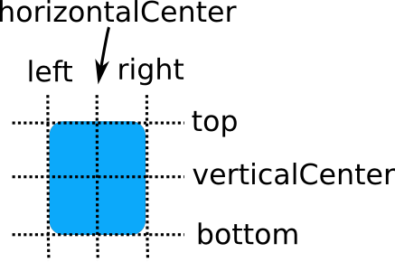
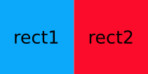
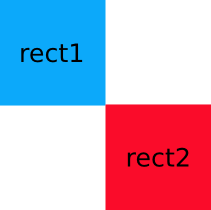
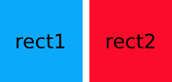

DAnchorsBase Class
class Dtk::Widget::DAnchorsBaseDAnchorsBase 提供了一种指定 QWidget 与其它 QWidget 之间的关系来确定 其位置的方法. More...
| Header: | #include <DAnchorsBase> |
| Inherited By: |
Public Functions
| void | moveBottom(int arg) |
| void | moveHorizontalCenter(int arg) |
| void | moveLeft(int arg) |
| void | moveRight(int arg) |
| void | moveTop(int arg) |
| void | moveVerticalCenter(int arg) |
| bool | setAnchor(const int &p, QWidget *target, const int &point) |
| bool | setCenterIn(Dtk::Widget::DAnchorsBase *centerIn) |
| bool | setFill(Dtk::Widget::DAnchorsBase *fill) |
Detailed Description
除了比较传统的布局方式之外，DtkWidget 还提供了一种使用锚定概念布局控件的方法（ 类似于 QQuickItem 中的 anchors 属性），可以认为每个控件具有一组6个不可见的“锚 线”：left，horizontalCenter，right，top，verticalCenter和bottom，如图所示：

使用 DAnchors 可以让 QWidget 基于这些“锚线”来确定相互间的关系，如：
DAnchors<QLabel> rect1(new QLabel("rect1")); DAnchors<QLabel> rect2(new QLabel("rect2")); rect2.setLeft(rect1.right());
这样 rect2 的左边界就会和 rect1 的右边界对齐：

另外还可以同时设置多个“锚线”：
DAnchors<QLabel> rect1(new QLabel("rect1")); DAnchors<QLabel> rect2(new QLabel("rect2")); rect2.setTop(rect1.bottom()); rect2.setLeft(rect1.right());

锚定布局同时在多个控件中使用，控件之间只需要满足以下条件： 控件之间为兄弟关系，或被锚定控件为父控件 锚定关系不能循环绑定
margin_offset 锚定的间隔和偏移
锚定系统允许设置“锚线”之间的间距，和“锚线”一一对应，每个控件都有一组4个 margin： leftMargin, rightMargin, topMargin 和 bottomMargin 以及两个 offset： horizontalCenterOffset 和 verticalCenterOffset。

下面是左margin的例子：
DAnchors<QLabel> rect1(new QLabel("rect1")); DAnchors<QLabel> rect2(new QLabel("rect2")); rect2.setLeftMargin(5); rect2.setLeft(rect1.right());
rect2 的左边界相距 rect1 的右边界5个像素：

Note: margin 仅仅是对设置的锚点生效，并不是让控件本身增加了边距，如果设置了 margin，但并没有设置相应的锚点，对控件本身而已是没有任何影响的。margin 的值可以 为负数，通过值的正负来决定margin的方向（内 margin 还是外 margin）
除了基于“锚线”来设置锚定外，另外还有 setCenterIn 和 setFill 这两个比较特殊的 的实现。
loop_anchor 判断循环锚定的方式
假设 DAnchorsBase a1, a2; a1.setRight(a2.left()); 则判断 a1 和 a2 之间 会不会存在循环绑定的逻辑为: 尝试更改 a1 右边界的值，更新后如果 a2 左边界的值产出了变化，则认为会导致循环绑 定，否则认为不存在
Member Function Documentation
void DAnchorsBase::moveBottom(int arg)
移动 target 控件的下边界到 arg 这个位置 arg 要移动到的位置
void DAnchorsBase::moveHorizontalCenter(int arg)
移动 target 控件的水平中线到 arg 这个位置 arg 要移动到的位置
void DAnchorsBase::moveLeft(int arg)
移动 target 控件的左边界到 arg 这个位置 arg 要移动到的位置
void DAnchorsBase::moveRight(int arg)
移动 target 控件的右边界到 arg 这个位置 arg 要移动到的位置
void DAnchorsBase::moveTop(int arg)
移动 target 控件的上边界到 arg 这个位置 arg 要移动到的位置
void DAnchorsBase::moveVerticalCenter(int arg)
移动 target 控件的竖直中线到 arg 这个位置 arg 要移动到的位置
bool DAnchorsBase::setAnchor(const int &p, QWidget *target, const int &point)
为 DAnchorsBase::target 对象设置锚定规则
Note: 可能会为目标控件隐式创建其对应的 DAnchorsBase 对象 p 为当前控件的哪个锚线/锚点设置锚定规则 target 锚定的目标控件 point 锚定的目标锚线/锚点 Returns 如果设置成功，则返回 true，否则返回 false
bool DAnchorsBase::setCenterIn(Dtk::Widget::DAnchorsBase *centerIn)
将 centerIn 中的target()作为参数调用其它重载函数 centerIn Returns
bool DAnchorsBase::setFill(Dtk::Widget::DAnchorsBase *fill)
将 fill 中的target()作为参数调用其它重载函数 fill Returns